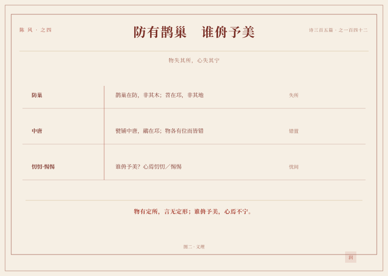

第一百四十二篇 防有鹊巢
陈风 · 之七 SJ142
朗读 · 普通话
依经文原文朗读，章次不读出；配古琴底乐，不改速、不加拖腔。全库同一音色（豆包 TTS），非播音员录制。
一 解题
诗三判：
- 谁在说：忧谗间之人。见所美之人恐为人所谗诳，心内忧惧，不敢自安；以草木错置、物失其所起兴，写谗言之可畏。
- 说什么事：两章换「苕／鷊」「巢／甓」「忉忉／惕惕」，所忧同是「谁侜予美」一事。物各有其所，谗人夺其所；所惧者不是相思，是离间。
- 为何编在此：前六篇或写巫舞游荡、或写男女会遇，此篇转入忧谗。陈风至是，见一国之政既弛于淫乐，又溃于信谗；忧惧之辞，与刺恶之辞相发。
《毛序》：“《防有鹊巢》，忧谗贼也。宣公多信谗，君子忧惧焉。”
朱子《诗集传》：“兴也。防，人所筑以捍水者。邛，丘。旨，美也。苕，苕饶也。茎如劳豆而细，叶似蒺藜而青，其茎叶绿色，可生食，如小豆藿也。侜，侜张也，犹郑风之所谓廷也。予美，指所与私者也。忉忉，忧貌。○此男女之有私，而忧或间之之词。故曰，防则有鹊巢矣，邛则有旨苕矣。今此何人，而侜张予之所美，使我忧之而至於忉忉乎。”二章：“兴也。庙中路谓之唐。甓，瓴甋也。鷊，小草，杂色如绶。惕惕，犹忉忉也。”
本库的看法：《防有鹊巢》是一首以「物失其所」为喻、忧谗间离间的诗。
毛序坐实「宣公多信谗，君子忧惧」；朱子读作「男女之有私而忧或间之之词」，以「予美」为所与私者。本库两存其说：诗面是忧惧谗间之辞，不指实某一谗人、某一私情；毛序所指宣公信谗，作为背景，不把诗当成政治讦告。
取象之要在「错置」：鹊巢本在木枝，苕本在丘；今巢在防堤、苕在丘上已非其地，甓铺中唐、鷊草在邛，皆是物失其所，以兴谗人夺人之亲、间人之好。断语：物有定所，言无定形；谁侜予美，心焉不宁。
先辨五事：「防」是捍水之堤，不是防护；「邛」是丘，不是地名；「侜」是侜张、诳欺，不是舟车之舟；「予美」是我所美之人，不是我美丽；「忉忉」「惕惕」都是忧惧之貌，不是劳苦。
二 经文
第一章
防有鹊巢，邛有旨苕。
谁侜予美？心焉忉忉。
第二章
中唐有甓，邛有旨鷊。
谁侜予美？心焉惕惕。
分章：二章，章四句。
三 韵读
- 一章：苕、忉忉，幽部；巢，宵部，起韵旁属。
朱子叶「苕，徒雕反，叶徒刀反」。
- 二章：甓、鷊、惕惕，锡部入声；三句同部，章内一贯。
朱子音「甓，音辟；鷊，音逆；惕，音剔」。
读法：一章幽部幽忧深长，二章锡部入声短促紧促；「谁侜予美」两章不改，是全诗之骨；忉忉之深忧转为惕惕之惊惧，忧一层而惧一层。
四 字义与名物
- 防：人所筑以捍水之堤岸（毛传「邑也」，郑笺、朱传皆作防堤；本库从郑、朱作堤，不取邑名。）。邛：丘，土丘。旨：美也。
- 苕：苕饶，草名；茎细如劳豆，叶青似蒺藜，茎叶可生食（毛传「苕，草也」，朱传详其形；从朱传名物。）。鷊：小草，杂色如绶带；一作「鹝」。
- 中唐：庙中路谓之唐，即庭中通道。甓：瓴甋，砖也。
- 侜：侜张，诳欺、离间（毛传「侜张，诳也」；朱传「犹郑风之所谓廷也」；从毛传训诳。）。予美：我所美之人。忉忉：忧貌。惕惕：犹忉忉，惊惧不安之貌。
五 今译
堤岸上哪来的鹊巢，土丘上长着美苕。是谁诳骗离间我所爱的人？我心里忧愁不安。
庭中通道铺着砖，土丘上长着杂色的鷊草。是谁诳骗离间我所爱的人？我心里惊惧难安。
六 章旨
- 一章：写巢与苕、忧与忉忉。鹊巢、美苕皆非其所；起两句物失其所，后两句人受其间。
- 二章：写甓与鷊、惧与惕惕。中唐铺甓、鷊草在邛，错置如故；所忧由深忧转为惊惧。
- 总收：两章两兴象，一草木一器用；物失其所可以辨，谗夺其亲不可防。末句两叠「谁侜予美」，通篇只问不答。
七 诗教
- 兴：以防堤有巢、丘上有苕起兴，以物之错置非其所，兴谗言之夺人所亲；物各有其所，言不可以夺其所。
- 观：观忧惧如何一层深一层——忉忉是心忧，惕惕是心惊；忧而未至于怒，惧而未至于绝，是尚欲自守。
- 群：谗人与所美之人相对，忧者居间；谗者在旁构造，听者在内心疑，中间隔一「侜」字。
- 怨：怨在「谁侜」一诘；不指名谗人，所惧是谗间这件事本身，不是某一仇人。
八 分寸与边界
- 不可把此诗读成泛泛相思。诗眼在「侜」，是谗间离间；一读成男女相思，错置之喻就落空。
- 不可把鹊巢、旨苕、甓、鷊当博物图谱逐一味辨。它们是错置之兴象；一味考据草木形色，诗眼就散。
- 不可把毛序「宣公多信谗」坐实成某一谗人的劾状。序说背景，诗面不指实姓名；一指名道姓，兴象之诗就成史传。
- 不可把「予美」解作「我美丽」。予美是我所美之人；一作自美，侜张所欺的对象就反了。
- 不可把「惕惕」读成警惕戒备、有意防备。惕惕是惊惧不安；一读成戒备，便把被动之忧写成主动之防。
- 不可把朱传「男女之有私」反推为诗中必有私情本事。朱传只是就「予美」作两解之一；一坐实私情，忧谗之旨就被情话淹没。
九 存疑
- 诗旨：毛序「忧谗贼，宣公多信谗，君子忧惧」；朱子「男女之有私而忧或间之之词」。本库两存，诗面从忧谗间，背景不指实。
- 防：毛传训「邑也」，郑笺、朱传作捍水之堤；从郑、朱，邑名之说存疑。
- 鷊／鹝：经文一作「鷊」，《尔雅》作「鹝」，绶草；字异而名物或同。两存。
- 「侜」：毛传训侜张为诳；朱传比之郑风「廷」（诳欺）；一说「侜」犹「舟」，周流掩蔽。从诳欺。
- 年代与作者：诗涉宣公信谗与否，作者为君子为私人，诗中无征；不可据序补史。
- 编次：此篇居陈风第七，介于男女会遇与刺恶之间；由风淫转入忧惧，编次之故旧说未详。
十 跨典
- 《论语·颜渊》：“浸润之谮，肤受之愬，不行焉，可谓明也已矣。”——谗言不行谓之明；此诗所忧，正是浸润肤受之间，侜张予美而莫之察。
- 《左传·庄公二十二年》：“陈人杀其大子御寇，陈公子完与颛孙奔齐。”——宣公（厉公）之世谗间骨肉之事，毛序「宣公多信谗」所指背景；诗不指此事，事为诗之背景。
- 《诗经·小雅·青蝇》：“营营青蝇，止于樊；岂弟君子，无信谗言。”——小雅戒谗；陈风此篇忧谗，与小雅同一风教，一曰无信，一曰忧惧。
- 《诗经·郑风·将仲子》：“人之多言，亦可畏也。”——人言之可畏；郑风畏其多言，陈风惧其侜张，畏与惧相发。
十一 双卡与图
六对：
| 防（捍水堤岸） |
防（防护／邑名） |
| 邛（土丘） |
邛（地名） |
| 侜（侜张诳欺离间） |
侜（舟车／周流） |
| 予美（我所美之人） |
予美（我美丽） |
| 忉忉（深忧貌） |
忉忉（劳苦貌） |
| 惕惕（惊惧不安） |
惕惕（戒备提防） |
图一 · 防有鹊巢 防巢、邛苕、中唐甓、旨鷊

图二 · 防有鹊巢 谁侜予美，忉忉惕惕
读图三处：
- 错置四象：图一堤上一巢、丘上一苕、庭中甓砖、丘上鷊草，各以位置见「非其所」；草木砖甓皆线描不施面。
- 忧惧两层：图二「忉忉／惕惕」两行相次，下贯「谁侜予美」一诘；谗人不画面目，只留一虚位。
- 不画相思：图中无相会、无赠答；诗眼在谗间，画中不补私情场景。